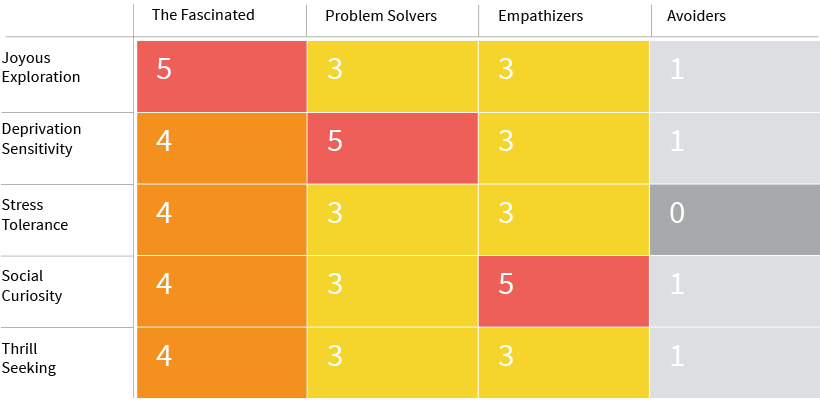

Designing for Curiosity: Using a 5-dimensional Curiosity Matrix to better understand user motivations and behaviors
In the field of psychology, curiosity is a cognitive and behavioral quality that is critical in the investigation of emotion and motivation. The phenomenology of curiosity has wide-ranging implications on a variety of human-centered fields, particularly UX design, because it is such a powerful motivating factor. People will take great risks and endure negative repercussions just to satisfy urges of curiosity, and thus it is crucial for UX designers and researchers to understand the phenomenon in greater detail.
Historically there has been a lot of debate on how to define curiosity, with some theorists contending that it arises due to rewards for resolving uncertainty and others asserting that there is innate pleasure derived from curiosity-driven behavior. A new study by psychologists at George Mason University gives us a greater understanding of the roots of curiosity.
The study found evidence of five different types of curiosity and four different types of curious people. This research has enormous implications for UX design because it creates new opportunities to understand the motivations and desires of users, it offers insights into how to design human-computer interactions that align with users’ natural curiosity, and it can be used as part of a blueprint for designing more effective and relatable artificial intelligence systems.
Our traditional understanding of curiosity is that it is an emotion of wanting to know or learn something. For the past century, psychologists primarily looked only at the behavioral traits of curious people, and observed the following:
- Asking a lot of unprompted questions
- Reading to acquire knowledge
- Examining interesting images
- Manipulating interesting objects
- Investigating the feelings, thoughts, and behaviors of other people
- Taking risks to acquire new experiences
- Persisting at tasks that are challenging
Acting on feelings of curiosity satisfies a drive to expand knowledge, build new skillsets, inspire creativity, and even bolster social relationships. Expanding on the simplified definition of curiosity as a strong desire to know or learn something, these behavior traits suggest that curiosity can be more clearly defined as “the recognition, pursuit, and desire to explore novel, uncertain, complex and ambiguous events” (Kashdan & Stiksma, et al. 2017).
In recent years, researchers have started to identify different facets of curiosity, including those that point to cognitive and not merely behavioral qualities. For instance, in 2009 Dr. Kashdan created a Curiosity and Exploration Inventory that identified two facets:
- Stretching: The motivation to seek out new information and experiences
- Embracing: A willingness to embrace the uncertain and unpredictable nature of everyday life
While these facets have their strengths, they don’t describe every aspect of curiosity. For instance, curiosity can also be distinguished as either a desire to know for its own sake (interest), or a desire to know because of the frustration of not knowing (deprivation). This distinction is critical for UX design because in many cases we are designing for users who are not exhibiting curiosity for deriving pleasure, but rather to resolve uncertainty and confusion. These are two very different types of motivations.
There are still other types of curiosity, such as thrill-seeking, creative thinking, and social curiosity. These also have important implications in UX design, as the curiosity exhibited by a risk-taking entrepreneur, an artist, or a frequent user of social media may not be driven purely by general interest or deprivation of knowledge.
The objective of the most recent study by Dr. Kashdan and his colleagues was threefold: First was to synthesize the research and build a unified framework to define the qualities of curiosity with specificity. Second was to take into account the rapid assessment that individuals perform to determine whether A) a situation has the potential to satisfy curiosity, and B) any negative consequences of pursuing investigation is worth the reward. Third is to approach social curiosity as a distinct dimension because social relationships are the fabric of human life. (I won’t dive into the specifics of the research methodology and analysis, but you can read it here.)
The 5-Dimensional Scale
The study by Dr. Kashdan et al. revealed that curiosity is far more multi-dimensional than previously thought. The results of their study are synthesized into a 5-dimensional scale described below:
- Joyous Exploration: The recognition and desire to seek out new knowledge and information, and the subsequent joy of learning. We can look at this as curiosity for curiosity’s sake, and we see this exhibited clearly in the ways in which most children learn, and why they incessantly ask “why?” We also see it in many adults.
- Deprivation Sensitivity: An emotional curiosity-driven more by tension and hard labor than by joy, such as pondering complex ideas, solving difficult problems, and striving to diminish gaps in knowledge. Learning new things and acquiring new skills satisfies a curiosity to continuously master new things. People like this often feel a sensitivity to being deprived of challenges. It’s why people do puzzles, take non-degree adult learning classes, and feel satisfaction in learning new skills.
- Stress Tolerance: The willingness to embrace the stress and ambiguity of exploring new, mysterious or risky experiences. This is the primary driver of people who love to travel and experience new cultures or go wilderness trekking, even with the discomfort and stress that comes with it.
- Social Curiosity: The desire to know what other people are thinking and doing by listening to, talking and socializing with other people. People like this love gossip and love to eavesdrop on conversations and observe behavior. They’re not merely nosy; they’re natural anthropologists. Social media and celebrity gossip, for example, feed social curiosity.
- Thrill Seeking: The willingness to take physical, social and financial risks in order to acquire new experiences. Extreme sports is one example, but this also applies to serial entrepreneurs and stand-up comedians. You can think of it as the curiosity of the thrill.
This new five-dimensional scale sheds far more light on the phenomenology of curiosity. However, it is not complete without also understanding the various types of curious people, because not everyone is curious about the same things, or to the same degree. To do this, the researchers scored participants and conducted cluster analysis by common traits. The result was four different types of curious people, who can be described as follows:
- Fascinated: Scores high across all types of curiosity, especially Joyous Exploration.
- Problem Solvers: Scores high in Deprivation Sensitivity, and medium across the rest of the spectrum.
- Empathizers: Scores high in Social Curiosity, and medium across the rest of the spectrum.
- Avoiders: Scores low across the whole spectrum, especially Stress Tolerance. Remember that Stress Tolerance is the willingness to embrace stress and ambiguity to acquire new experiences. Avoiders seem particularly repelled by this.
Some other interesting personality traits emerge from these profiles. For instance, the Fascinated type tends to be extroverted, exhibits low stress levels, and on average has a higher income. Problem Solvers tend to be more introverted, are highly driven and score lowest in apathy of all other types. Empathizers tend to be extroverted and are more likely to be women and exhibit high usage rates of social media. Avoiders tend to have the lowest education levels and lower incomes, and the highest stress levels.
UX and the Curiosity Matrix
These type of data have enormous implications for user research and UX design. Indeed, as a design tool it may be at least as if not more useful than other common methods of personality analysis such as the Myers-Briggs Type Indicator. To make these findings an effective UX research and design tool, we created a chart that we call the Curiosity Matrix.

This matrix can be used in user research to better understand user personality types and motivations, both quantitatively and qualitatively. Answers to questions in user interviews and surveys can be scored on a 5-point Likert Scale, but qualitative answers should also be recorded as a holistic ethnography.
Questions that can be used to evaluate a user’s curiosity type may include (but should not be limited to) the following examples. Users should be asked to score themselves on a 5-point Likert scale (1=Strongly Disagree, 2=Disagree, 3=Neutral, 4=Agree, 5=Strongly Agree) as well as give qualitative answers, and the researcher may ask follow-up questions for clarity.
Here are sample questions for each of the types of curiosity:
Joyous Exploration:
- I commonly read or seek out knowledge for no immediate reason.
- I love documentaries.
Deprivation Sensitivity:
- If there’s a difficult problem to solve at work or school, I can’t wait to work on it.
- I like to take classes, read or use other methods to learn new skills.
Stress Tolerance:
- I love to travel to new places.
- I’m excited by a new experience where I don’t know what to expect.
Social Curiosity:
- I love to eavesdrop on conversations between strangers.
- I use social media several times per day every day.
Thrill Seeking:
- I love sports where there is some risk involved (i.e. snowboarding, skydiving, rock climbing, etc.)
- The risk of starting a new business is attractive to me.
By identifying the types of curious people for which we are designing, we can create more coherent and compelling experiences. Curiosity is a powerful motivator with users, whether it’s in the drive to acquire knowledge and experiences, the need to close gaps in knowledge, the desire to understand what other other people are doing and saying, or the thrill of “what will happen if I do this…?”. Due to its importance in understanding human psychology and behavior, the Curiosity Matrix should be a standard data point in user research and user persona creation.